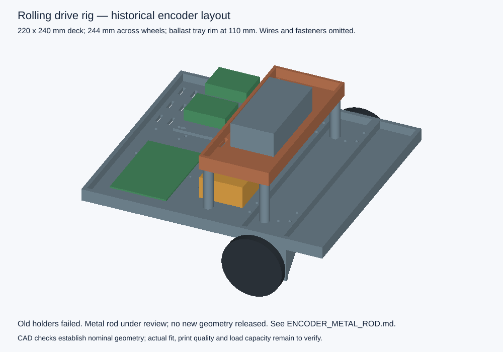
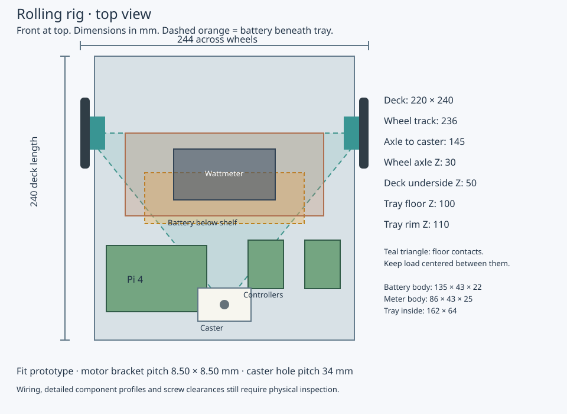

GROUND DRIVE EXPERIMENT · FIT PROTOTYPE
Test the drive at a known weight.
Two owned BDUAV motors, 60 mm wheels, one caster, Pi 4 and the existing 3S battery. Add secured ballast, run a measured course, and record what actually happens.
Assembly and test instructions · Complete hardware proposal · Assembly STEP · Updated motor bracket · Metal-rod encoder proposal · Encoder mounting guide
The test chassis


The deck prints as one 220 × 240 mm piece; wheels bring the width to 244 mm. The assembly now uses the received HiLetgo board outline, 16 mm square hole pattern and revised carrier. PCB thickness and sensor package dimensions are allowances; actual connector clearance and magnetic gap remain to check. No powered trials or load rating have been established.
Hardware and readiness
Two HiLetgo AS5600s and an included 4 × 2 mm magnet received. ST controller receipt remains unreported. Remaining allowance: $171.00 before shipping/tax, before deducting other supplies in inventory. Actual paid prices are unknown. The complete BOM separates observed reference prices from allowances.
Confirmed full bracket fits with free motor rotation: 1 of 2. The brackets use 8.50 × 8.50 mm adjacent-hole spacing. The second bracket fit remains unreported. One caster riser is printed and mounted; only one is required. The owner identified the extra clip-like feature as Cura support. A USB-only encoder diagnostic is available; motor-driving firmware and commissioning remain to be completed.
Battery and wattmeter body dimensions fit the existing layout. The battery is 135 × 43 × 22 mm; the meter is 86 × 43 × 25 mm and fits the tray's 162 × 64 mm clear interior. Leads and straps require an unpowered assembly check. The photo shows the printed deck with one wheel/motor/encoder assembly. Its geometry and motor brackets are unchanged; the revised encoder carrier preserves the existing mounting interface.
Next: the tape holder enters the bore but wobbles and lacks reach. Review the owner's metal-rod proposal before relocating the encoder. The owner-supplied SpeedyFPV listing corroborates the nominal 3.4 mm motor bore. Use a 3.4 mm nominal rod candidate; check close shaft fit and straight support length before selecting cut length, retention or magnet cap. No new print is released. The assembly preview is historical and does not validate a replacement. Independent weighing, wiring preparation and USB-only diagnostics can continue.